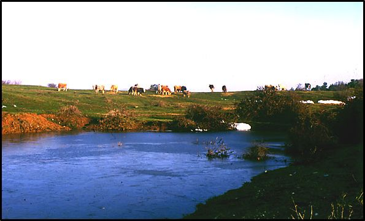

Αλλοιώσεις και υποβάθμιση των χερσαίων βιοτόπων
Φυσικοί παράγοντες
- Αλλοιώσεις από παράγοντες του περιβάλλοντος (ξηρασία, ανεμορριψίες, χιονοθλασίες)
- Αλλοιώσεις από έντομα, βακτήρια μύκητες
Ανθρωπογενείς παράγοντες
- Αλλοιώσεις από πυρκαγιές
- Αλλοιώσεις από ρύπανση του περιβάλλοντος (π.χ. όξινη βροχή, ως αποτέλεσμα αυξημένης ποσότητας κυρίως διοξειδίου του θείου)
- Αλλοιώσεις από καταπατήσεις
- Αλλοιώσεις από υπερβολική βόσκηση των εκτάσεων
